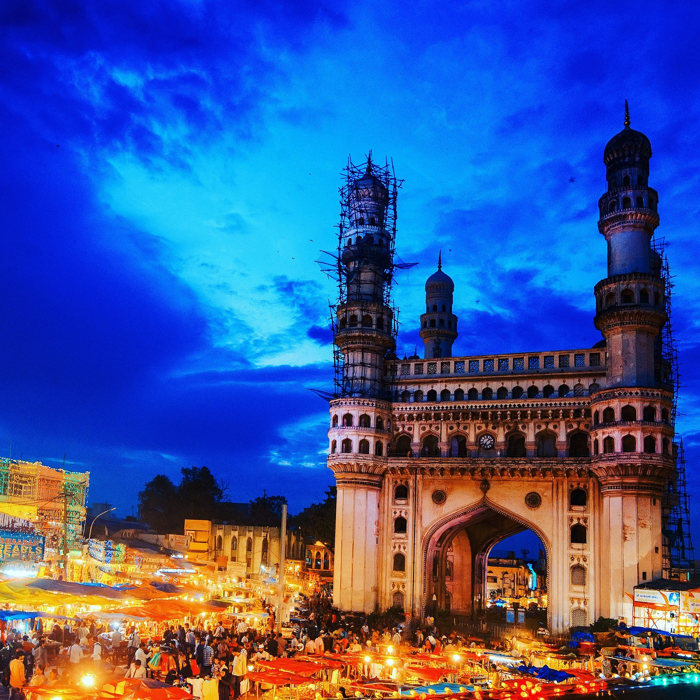
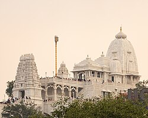
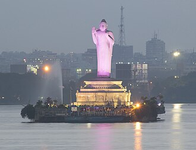

Hyderabad, the "City of Pearls," offers a blend of historic grandeur and modern attractions, featuring iconic landmarks like the 16th-century Charminar, the massive Golconda Fort, and the serene Hussain Sagar Lake. Key cultural and architectural sites include the lavish Chowmahalla Palace, Qutb Shahi Tombs, and the sprawling Ramoji Film City. Visitors also frequent the white marble Birla Mandir, Salar Jung Museum, and the bustling Laad Bazaar for shopping.